Topology: one Versa SD-WAN hub (the Versa rendezvous point) and two branches, connected through a Cisco Nexus RP to a Cisco multicast domain whose three RPs share one anycast RP address and exchange source information with MSDP. Every address and name below is the value of this lab. All device outputs are from the lab devices, collected on 2026-11-24 and not edited.
| Item | Value |
|---|---|
| Author | Eniz Aksoy |
| Method | Written with AI assistance; all commands and outputs are from the author's lab. |
| Version | VOS 22.1.4 and Director 22.1.4; Cisco Nexus 9000v running NX-OS 10.5(3) |
| Validated | 24 Nov 2026: multicast in both directions between a Versa source / receiver and a Cisco source / receiver, 0 % loss |
outputs/VERIFICATION.md in the repo.1. Topology, addresses and software 2. How it works 3. Versa configuration: HUB1 (the Versa RP) 4. Versa configuration: Branch1 and Branch2 5. Cisco NX-OS configuration 6. Test streams 7. Verification 8. Confirmation 9. Things to know before you repeat this
1. Topology, addresses and software
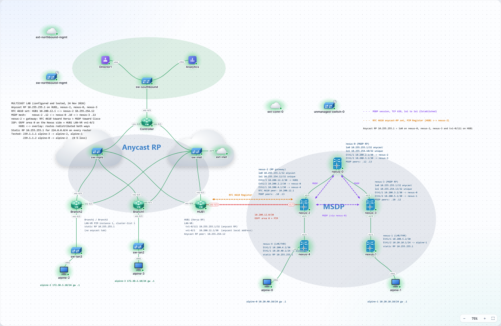
| Role | Device | RP address (shared) | Own address | Links used in this guide |
|---|---|---|---|---|
| Versa RP (hub) | HUB1 | 10.255.255.1/32 on tvi-0/111 | 10.200.12.1 (vni-0/2) | vni-0/2 10.200.12.1/30 to nexus-2; SD-WAN overlay to the branches |
| Versa branch | Branch1 | – | – | LAN 172.30.2.1/24, host alpine-3 172.30.2.10 |
| Versa branch | Branch2 | – | – | LAN 172.30.3.1/24, host alpine-2 172.30.3.10 |
| Cisco RP, gateway | nexus-2 | 10.255.255.1/32 on loopback0 | 10.255.254.12 (loopback1) | Eth1/3 10.200.12.2/30 to HUB1; Eth1/2 to nexus-0; Eth1/1 to nexus-4 |
| Cisco RP | nexus-0 | 10.255.255.1/32 on loopback0 | 10.255.254.10 (loopback1) | Eth1/1 to nexus-2; Eth1/2 to nexus-3 |
| Cisco RP | nexus-3 | 10.255.255.1/32 on loopback0 | 10.255.254.13 (loopback1) | Eth1/1 to nexus-0; Eth1/2 to nexus-1 |
| Cisco first / last hop | nexus-4 | – | – | LAN 10.20.40.1/24, host alpine-0 10.20.40.10 |
| Cisco first / last hop | nexus-1 | – | – | LAN 10.20.10.1/24, host alpine-1 10.20.10.10 |
| Item | Value |
|---|---|
| Anycast RP address | 10.255.255.1 for 224.0.0.0/4, configured as static RP on every router |
| RFC 4610 anycast-RP set | HUB1 (10.200.12.1) and nexus-2 (10.255.254.12) |
| MSDP mesh | nexus-2, nexus-0, nexus-3 between their loopback1 addresses |
| Routing | OSPF area 0 between the Nexus switches and on the HUB1 LAN link; HUB1 redistributes between OSPF and the SD-WAN overlay |
| Versa organization / VR | ACME / ACME-LAN-VR; templates HUB (HUB1) and BRANCH (Branch1, Branch2) |
| Test groups | 239.1.1.1 (source alpine-3 behind Branch1) and 239.1.1.2 (source alpine-0 behind nexus-4) |
2. How it works
Versa VOS supports PIM Anycast RP as described in RFC 4610: the RPs that share an RP address tell each other about active sources by copying the PIM Register messages they receive. VOS does not run MSDP. A Cisco network with several RPs behind one anycast address normally uses MSDP for the same job. The two methods do not talk to each other, so one RP has to speak both.
- Shared RP address. HUB1, nexus-2, nexus-0 and nexus-3 all own 10.255.255.1. Every router uses that address as its static RP and reaches the nearest RP.
- RFC 4610 between HUB1 and nexus-2. Each lists the other's own (not shared) address as an anycast-RP peer. A Register that reaches one of them is copied to the other.
- MSDP between the Cisco RPs. nexus-2, nexus-0 and nexus-3 form a full mesh and announce active sources as Source-Active (SA) messages.
- nexus-2 is the gateway. A source registered at HUB1 reaches nexus-2 as a Register and leaves it as an MSDP SA; a source registered on the Cisco side is copied by nexus-2 to HUB1 as a Register.
Cisco platform note: the gateway needs IPv4 ip pim anycast-rp and MSDP on the same RP. On Cisco IOS XE 17.3.08a (CSR1000v) and 17.16.01a (Catalyst 8000V) the CLI offers anycast-rp only under ipv6 pim, not under ip pim, so IOS XE cannot be the RFC 4610 peer of Versa for IPv4. NX-OS has both; this guide uses NX-OS 10.5(3).
3. Versa configuration: HUB1 (the Versa RP)
All steps are done in the Director GUI on the post-staging template HUB and its bind data, then committed to HUB1. The last part of this section shows the resulting configuration on the device.
3.1 LAN address toward the Cisco RP
The hub LAN interface vni-0/2 connects to nexus-2. Its address is also the hub's own address in the anycast-RP set.
GUI
Director View > Workflows > Devices > Devices > HUB1 > Bind Data > User Input > Post Staging Template > Template: HUB > Interfaces. Set ACME-branch-lan_IPv4__staticaddress to 10.200.12.1/30.
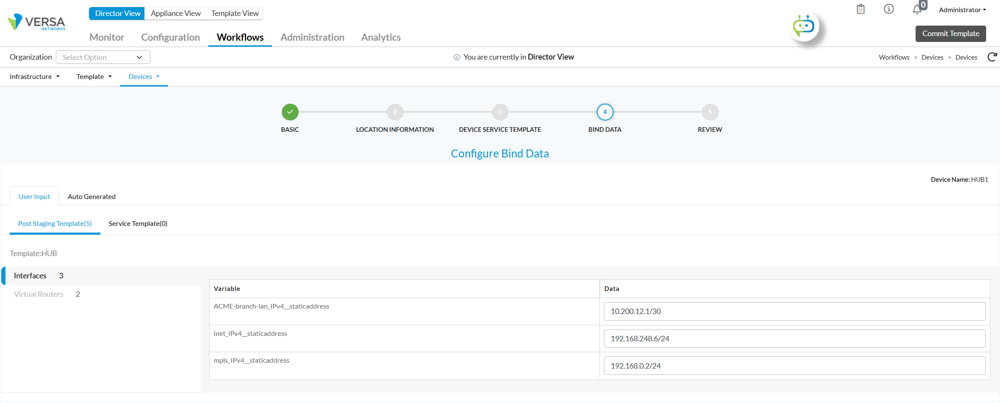
3.2 Tunnel interface for the anycast RP address
The shared RP address needs an interface of its own that is always up. A tunnel virtual interface (TVI) with a /32 address is used as a loopback.
GUI
Template View (HUB) > Configuration > Networking > Interfaces > Tunnel > Add. Interface tvi-0/111, subinterface unit 0, IPv4 address 10.255.255.1/32. The other fields were left at the values of the dialog (MTU 1400, Mode IPsec, Point-to-multi-point IPsec tunnel).
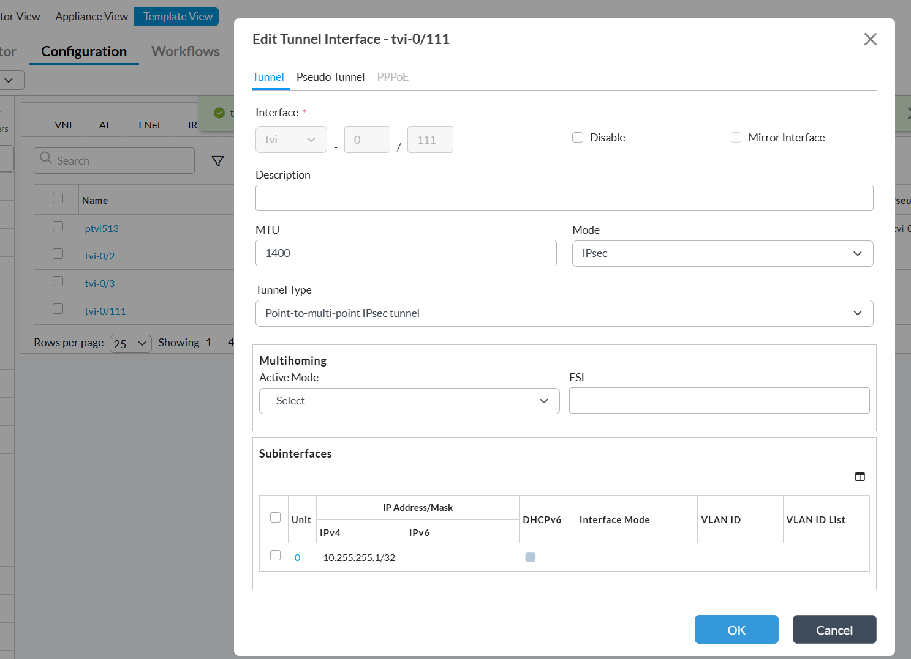
3.3 Put the TVI into the LAN network
The LAN network ACME-branch-lan is already a member of ACME-LAN-VR, of its zone and of the organization's traffic identification. Adding tvi-0/111.0 to this network gives the TVI all three memberships in one step.
GUI
Template View (HUB) > Configuration > Networking > Networks > ACME-branch-lan > Interfaces > Add > tvi-0/111.0.
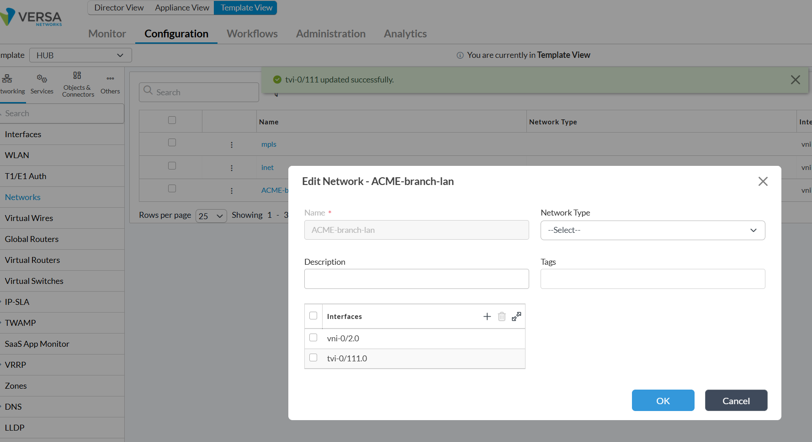
3.4 OSPF toward nexus-2
OSPF area 0 on the LAN network forms the adjacency with nexus-2. HUB1 learns the Cisco prefixes from it and gives the branch prefixes to it; the LAN-VR of a workflow template already redistributes between OSPF and the overlay, no extra policy was needed.
GUI
Template View (HUB) > Configuration > Networking > Virtual Routers > ACME-LAN-VR > OSPF > OSPF Instance > Add. Instance ID 3014, Router ID as a variable, Areas: Area ID 0, Network ACME-branch-lan.
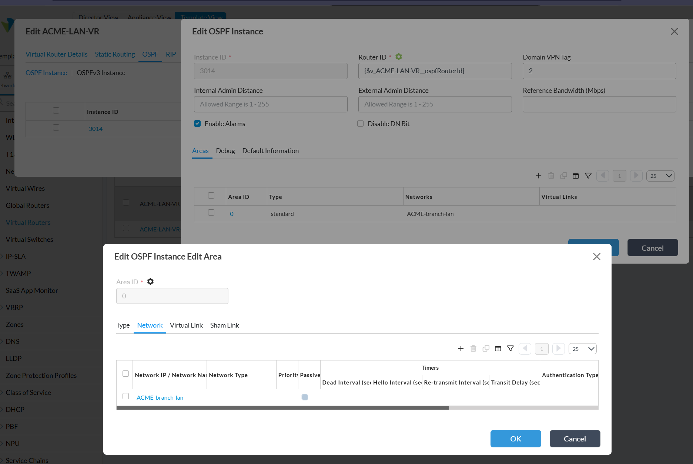
Then give the router ID variable a value in the bind data of HUB1 (Workflows > Devices > HUB1 > Bind Data > OSPF). The lab used 10.255.255.1; use an address that only this router has when more than one Versa RP shares the anycast address.
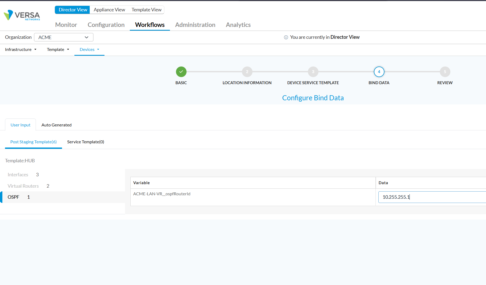
3.5 PIM instance, cluster list and PIM on the LAN network
The cluster list number makes the PIM routers of the SD-WAN overlay neighbours of each other; use the same number on the hub and on every branch. PIM is enabled on the Networks tab, with the network that holds the LAN interface and the TVI.
GUI
Template View (HUB) > Virtual Routers > ACME-LAN-VR > PIM > Add. Instance ID 1, Cluster List 1. Networks tab > Add > ACME-branch-lan.
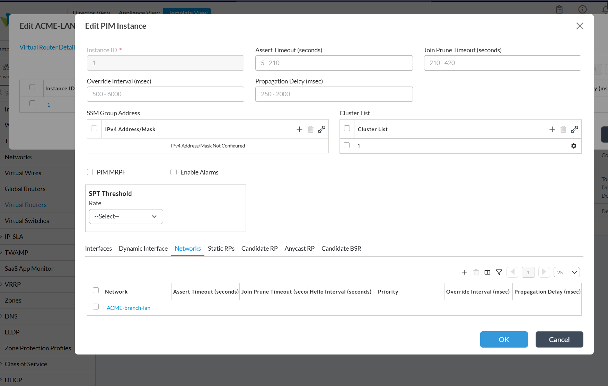
Note: do not add vni-0/2.0 or tvi-0/111.0 on the Interfaces tab. An interface that is a member of a network has to be referenced through the network; otherwise the commit fails (section 9).
3.6 Static RP
The RP itself also needs the static RP entry: it tells HUB1 that 10.255.255.1, which it owns, is the RP for the group range.
GUI
PIM instance 1 > Static RPs tab > Add. RP Address 10.255.255.1, Group Range 224.0.0.0/4.
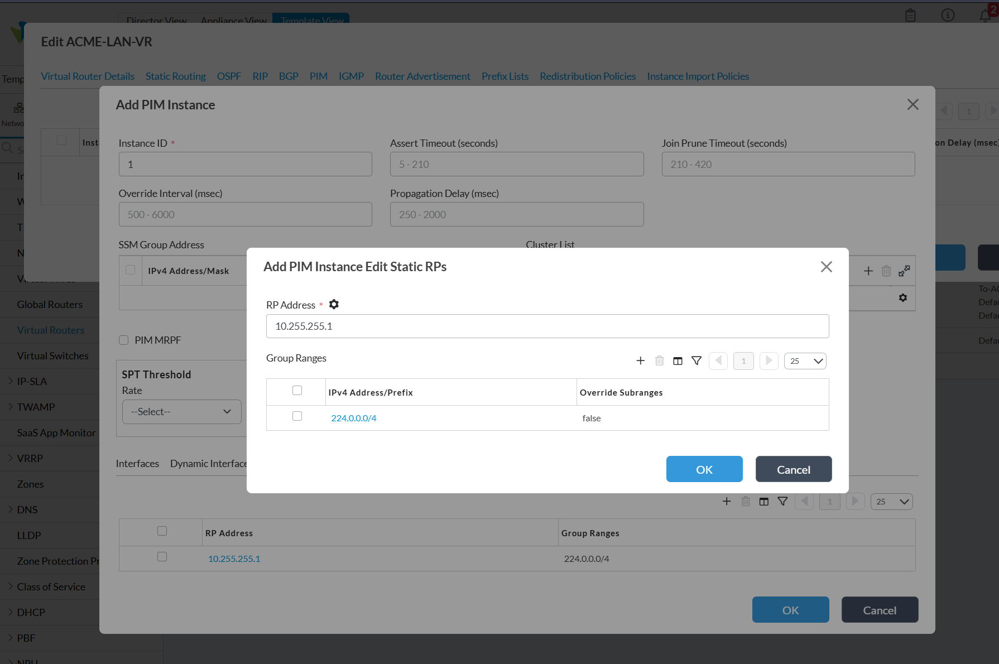
3.7 Anycast RP: shared address, own address and the Cisco peer
Three values: Address is the shared RP address. Local Address is the hub's own address, used as the source of the Registers it sends to the peer; it must not be the shared address. RP is the own address of the peer RP, here loopback1 of nexus-2.
GUI
PIM instance 1 > Anycast RP tab > Add. Address 10.255.255.1, Local Address 10.200.12.1, RP 10.255.254.12.
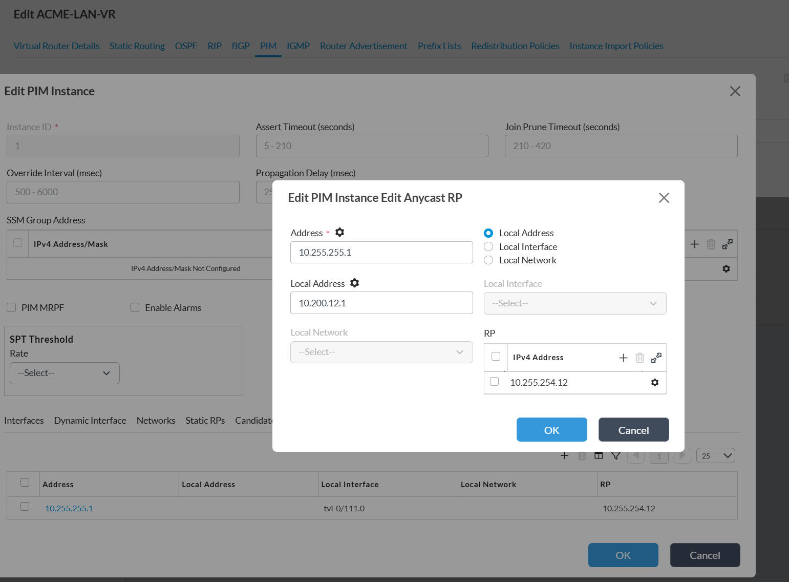
Observation on Director 22.1.4: in this lab the GUI did not store the Local Address. After OK the row showed no local address, and the template read through the REST API had no local-address leaf. Without it the configuration commits, but HUB1 answers the Registers of the peer with a Register-Stop and learns no source from it. The value was written with the Director REST API:
REST call (anycast-RP entry with its local address, template HUB)
POST https://<director>:9182/api/config/devices/template/HUB/config/routing-instances/routing-instance/ACME-LAN-VR/protocols/pim/rti-pim/1/rp
{"anycast-rp":{"address":"10.255.255.1","local-address":"10.200.12.1","rp":[{"address":"10.255.254.12"}]}}Check it on the device with the command in section 7.3: the output must have a row with LOCAL true.
3.8 Commit and the configuration on HUB1
GUI
Director View > Commit Template > organization ACME, template HUB, device HUB1 > Commit.
Resulting configuration on HUB1 (VOS CLI)
admin@HUB1-cli> show configuration interfaces tvi-0/111 | display set
set interfaces tvi-0/111 enable true
set interfaces tvi-0/111 mtu 1400
set interfaces tvi-0/111 mode ipsec
set interfaces tvi-0/111 type p2mp-esp
set interfaces tvi-0/111 unit 0 enable true
set interfaces tvi-0/111 unit 0 family
set interfaces tvi-0/111 unit 0 family inet
set interfaces tvi-0/111 unit 0 family inet address 10.255.255.1/32
admin@HUB1-cli> show configuration interfaces vni-0/2 | display set
set interfaces vni-0/2 enable true
set interfaces vni-0/2 unit 0 description "LAN interface: ACME-branch-lan"
set interfaces vni-0/2 unit 0 vlan-id 0
set interfaces vni-0/2 unit 0 enable true
set interfaces vni-0/2 unit 0 family
set interfaces vni-0/2 unit 0 family inet
set interfaces vni-0/2 unit 0 family inet address 10.200.12.1/30
admin@HUB1-cli> show configuration networks ACME-branch-lan | display set
set networks ACME-branch-lan interfaces [ tvi-0/111.0 vni-0/2.0 ]
admin@HUB1-cli> show configuration routing-instances ACME-LAN-VR protocols ospf | display set
set routing-instances ACME-LAN-VR protocols ospf 3014 router-id 10.255.255.1
set routing-instances ACME-LAN-VR protocols ospf 3014 domain-vpn-tag 2
set routing-instances ACME-LAN-VR protocols ospf 3014 enable-alarms
set routing-instances ACME-LAN-VR protocols ospf 3014 area 0 network-name ACME-branch-lan metric 1
admin@HUB1-cli> show configuration routing-instances ACME-LAN-VR protocols pim | display set
set routing-instances ACME-LAN-VR protocols pim 1 cluster-list [ 1 ]
set routing-instances ACME-LAN-VR protocols pim 1 network ACME-branch-lan
set routing-instances ACME-LAN-VR protocols pim 1 rp static address 10.255.255.1 group-ranges 224.0.0.0/4 override-subranges false
set routing-instances ACME-LAN-VR protocols pim 1 rp anycast-rp 10.255.255.1 rp 10.255.254.12
set routing-instances ACME-LAN-VR protocols pim 1 rp anycast-rp 10.255.255.1 local-address 10.200.12.14. Versa configuration: Branch1 and Branch2
The branches are ordinary PIM sparse-mode routers. They need PIM on the LAN network, the same cluster list as the hub, and the static RP. No tunnel interface, no OSPF and no anycast-RP entry.
4.1 PIM instance, cluster list, LAN network
GUI
Template View (BRANCH) > Virtual Routers > ACME-LAN-VR > PIM > Add. Instance ID 1, Cluster List 1. Networks tab > Add > ACME-branch-lan. IGMP version 2 runs on the LAN interface as soon as PIM is enabled on it; no IGMP configuration is needed.
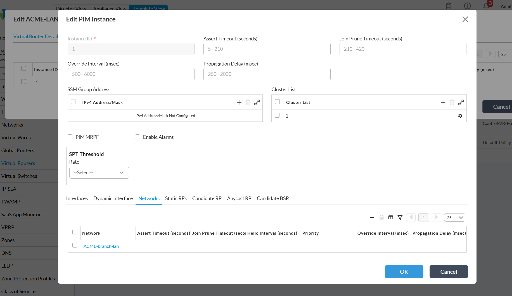
4.2 Static RP
GUI
PIM instance 1 > Static RPs tab > Add. RP Address 10.255.255.1, Group Range 224.0.0.0/4. Then Commit Template BRANCH to Branch1 and Branch2.
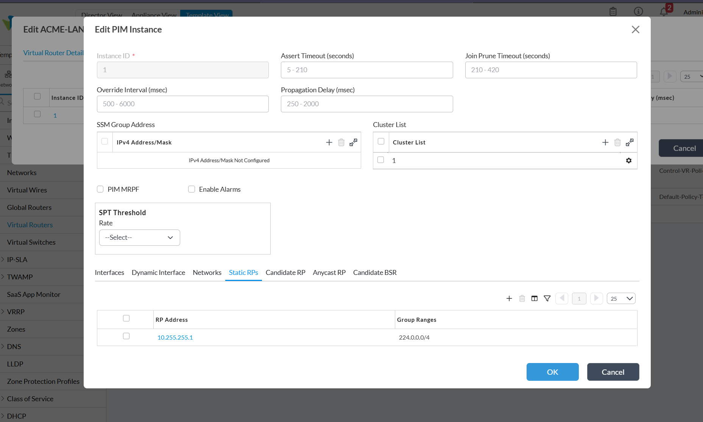
Resulting configuration on Branch1 (VOS CLI)
admin@Branch1-cli> show configuration routing-instances ACME-LAN-VR protocols pim | display set
set routing-instances ACME-LAN-VR protocols pim 1 cluster-list [ 1 ]
set routing-instances ACME-LAN-VR protocols pim 1 network ACME-branch-lan
set routing-instances ACME-LAN-VR protocols pim 1 rp static address 10.255.255.1 group-ranges 224.0.0.0/4 override-subranges falseResulting configuration on Branch2 (VOS CLI)
admin@Branch2-cli> show configuration routing-instances ACME-LAN-VR protocols pim | display set
set routing-instances ACME-LAN-VR protocols pim 1 cluster-list [ 1 ]
set routing-instances ACME-LAN-VR protocols pim 1 network ACME-branch-lan
set routing-instances ACME-LAN-VR protocols pim 1 rp static address 10.255.255.1 group-ranges 224.0.0.0/4 override-subranges false5. Cisco NX-OS configuration
The three Cisco RPs carry the shared address on loopback0 and their own address on loopback1. MSDP runs between the loopback1 addresses, and the OSPF router ID is pinned to loopback1 because loopback0 is the same on all three.
5.1 nexus-2: the gateway RP (RFC 4610 toward Versa, MSDP toward Cisco)
Commands (nexus-2, configuration mode)
feature ospf
feature pim
feature msdp
router ospf 1
router-id 10.255.254.12
interface loopback0
description ANYCAST-RP
ip address 10.255.255.1/32
ip router ospf 1 area 0.0.0.0
ip pim sparse-mode
interface loopback1
description UNIQUE-RP
ip address 10.255.254.12/32
ip router ospf 1 area 0.0.0.0
ip pim sparse-mode
interface Ethernet1/3
description to HUB1 vni-0/2
no switchport
ip address 10.200.12.2/30
ip router ospf 1 area 0.0.0.0
ip pim sparse-mode
no shutdown
ip pim rp-address 10.255.255.1 group-list 224.0.0.0/4
ip pim anycast-rp 10.255.255.1 10.255.254.12
ip pim anycast-rp 10.255.255.1 10.200.12.1
ip msdp originator-id loopback1
ip msdp peer 10.255.254.10 connect-source loopback1
ip msdp peer 10.255.254.13 connect-source loopback1
ip msdp mesh-group 10.255.254.10 RP-MESH
ip msdp mesh-group 10.255.254.13 RP-MESHip pim anycast-rp 10.255.255.1 <address>: one line per member of the RFC 4610 set, including the switch itself (10.255.254.12) and HUB1 (10.200.12.1).ip msdp originator-id loopback1: the SA messages carry the own address. With the default (the RP address) every RP would announce the same ID and the peers would drop the messages.ip msdp mesh-group: the three RPs are fully meshed, so an SA received from one peer is not sent on to the other.Ethernet1/1andEthernet1/2(to nexus-4 and nexus-0) are configured like Ethernet1/3 with their own /30 addresses.
Running configuration on nexus-2
nexus-2# show running-config interface loopback0
!Command: show running-config interface loopback0
!Running configuration last done at: Tue Nov 24 20:17:42 2026
!Time: Tue Nov 24 21:11:38 2026
version 10.5(3) Bios:version
interface loopback0
description ANYCAST-RP
ip address 10.255.255.1/32
ip router ospf 1 area 0.0.0.0
ip pim sparse-mode
nexus-2# show running-config interface loopback1
!Command: show running-config interface loopback1
!Running configuration last done at: Tue Nov 24 20:17:42 2026
!Time: Tue Nov 24 21:11:38 2026
version 10.5(3) Bios:version
interface loopback1
description UNIQUE-RP
ip address 10.255.254.12/32
ip router ospf 1 area 0.0.0.0
ip pim sparse-mode
nexus-2# show running-config interface Ethernet1/3
!Command: show running-config interface Ethernet1/3
!Running configuration last done at: Tue Nov 24 20:17:42 2026
!Time: Tue Nov 24 21:11:38 2026
version 10.5(3) Bios:version
interface Ethernet1/3
description to HUB1 vni-0/2
no switchport
ip address 10.200.12.2/30
ip router ospf 1 area 0.0.0.0
ip pim sparse-mode
no shutdown
nexus-2# show running-config ospf
!Command: show running-config ospf
!Running configuration last done at: Tue Nov 24 20:17:42 2026
!Time: Tue Nov 24 21:11:39 2026
version 10.5(3) Bios:version
feature ospf
router ospf 1
router-id 10.255.254.12
interface loopback0
ip router ospf 1 area 0.0.0.0
interface loopback1
ip router ospf 1 area 0.0.0.0
interface Ethernet1/1
ip router ospf 1 area 0.0.0.0
interface Ethernet1/2
ip router ospf 1 area 0.0.0.0
interface Ethernet1/3
ip router ospf 1 area 0.0.0.0
nexus-2# show running-config pim
!Command: show running-config pim
!Running configuration last done at: Tue Nov 24 20:17:42 2026
!Time: Tue Nov 24 21:11:39 2026
version 10.5(3) Bios:version
feature pim
ip pim rp-address 10.255.255.1 group-list 224.0.0.0/4
ip pim anycast-rp 10.255.255.1 10.200.12.1
ip pim anycast-rp 10.255.255.1 10.255.254.12
interface loopback0
ip pim sparse-mode
interface loopback1
ip pim sparse-mode
interface Ethernet1/1
ip pim sparse-mode
interface Ethernet1/2
ip pim sparse-mode
interface Ethernet1/3
ip pim sparse-mode
nexus-2# show running-config msdp
!Command: show running-config msdp
!Running configuration last done at: Tue Nov 24 20:17:42 2026
!Time: Tue Nov 24 21:11:40 2026
version 10.5(3) Bios:version
feature msdp
ip msdp originator-id loopback1
ip msdp peer 10.255.254.10 connect-source loopback1
ip msdp mesh-group 10.255.254.10 RP-MESH
ip msdp peer 10.255.254.13 connect-source loopback1
ip msdp mesh-group 10.255.254.13 RP-MESH5.2 nexus-0 and nexus-3: Cisco RPs with MSDP only
Same as nexus-2 without the two anycast-rp lines; each has its own loopback1 address and lists the other two RPs as MSDP peers.
Running configuration on nexus-0
nexus-0# show running-config pim
!Command: show running-config pim
!Running configuration last done at: Tue Nov 24 20:04:03 2026
!Time: Tue Nov 24 21:11:43 2026
version 10.5(3) Bios:version
feature pim
ip pim rp-address 10.255.255.1 group-list 224.0.0.0/4
interface loopback0
ip pim sparse-mode
interface loopback1
ip pim sparse-mode
interface Ethernet1/1
ip pim sparse-mode
interface Ethernet1/2
ip pim sparse-mode
nexus-0# show running-config msdp
!Command: show running-config msdp
!Running configuration last done at: Tue Nov 24 20:04:03 2026
!Time: Tue Nov 24 21:11:43 2026
version 10.5(3) Bios:version
feature msdp
ip msdp originator-id loopback1
ip msdp peer 10.255.254.12 connect-source loopback1
ip msdp mesh-group 10.255.254.12 RP-MESH
ip msdp peer 10.255.254.13 connect-source loopback1
ip msdp mesh-group 10.255.254.13 RP-MESHRunning configuration on nexus-3
nexus-3# show running-config pim
!Command: show running-config pim
!Running configuration last done at: Tue Nov 24 20:17:40 2026
!Time: Tue Nov 24 21:11:44 2026
version 10.5(3) Bios:version
feature pim
ip pim rp-address 10.255.255.1 group-list 224.0.0.0/4
interface loopback0
ip pim sparse-mode
interface loopback1
ip pim sparse-mode
interface Ethernet1/1
ip pim sparse-mode
interface Ethernet1/2
ip pim sparse-mode
nexus-3# show running-config msdp
!Command: show running-config msdp
!Running configuration last done at: Tue Nov 24 20:17:40 2026
!Time: Tue Nov 24 21:11:45 2026
version 10.5(3) Bios:version
feature msdp
ip msdp originator-id loopback1
ip msdp peer 10.255.254.10 connect-source loopback1
ip msdp mesh-group 10.255.254.10 RP-MESH
ip msdp peer 10.255.254.12 connect-source loopback1
ip msdp mesh-group 10.255.254.12 RP-MESH5.3 nexus-1 and nexus-4: first-hop and last-hop routers
Not RPs. They run OSPF and PIM on their links and use the shared address as static RP.
Running configuration on nexus-1
nexus-1# show running-config pim
!Command: show running-config pim
!Running configuration last done at: Tue Nov 24 19:59:09 2026
!Time: Tue Nov 24 21:11:46 2026
version 10.5(3) Bios:version
feature pim
ip pim rp-address 10.255.255.1 group-list 224.0.0.0/4
interface Ethernet1/1
ip pim sparse-mode
interface Ethernet1/2
ip pim sparse-modeRunning configuration on nexus-4
nexus-4# show running-config pim
!Command: show running-config pim
!Running configuration last done at: Tue Nov 24 19:02:30 2026
!Time: Tue Nov 24 21:11:48 2026
version 10.5(3) Bios:version
feature pim
ip pim rp-address 10.255.255.1 group-list 224.0.0.0/4
interface Ethernet1/1
ip pim sparse-mode
interface Ethernet1/2
ip pim sparse-mode6. Test streams
The hosts are Alpine Linux nodes with iperf 2. A receiver joins the group with IGMP and prints one line every five seconds while data arrives; a sender transmits UDP to the group.
Commands (receiver host)
nohup iperf -s -u -B 239.1.1.1%eth1 -i 5 > /tmp/rx-239.1.1.1.log 2>&1 &
tail -f /tmp/rx-239.1.1.1.logCommands (sender host)
nohup iperf -c 239.1.1.1 -u -l 1000 -T 16 -t 7200 -b 64k -i 30 > /tmp/tx.log 2>&1 &-T 16sets the multicast TTL. The default is 1 and the stream would stop at the first router.-l 1000sets the datagram size. With the iperf default of 1470 bytes no stream passed the SD-WAN overlay in this lab (section 9).- A second group uses another port on both sides:
-B 239.1.1.2%eth1 -p 5002and-c 239.1.1.2 -p 5002.
| Test | Sender | Group | Receivers |
|---|---|---|---|
| A | alpine-3 (behind Branch1, 172.30.2.10) | 239.1.1.1 port 5001 | alpine-1 (behind nexus-1) and alpine-2 (behind Branch2) |
| B | alpine-0 (behind nexus-4, 10.20.40.10) | 239.1.1.2 port 5002 | alpine-2 (behind Branch2) |
7. Verification
Each step names the device, shows the command and the output of the lab, and says what to look at.
7.1 OSPF between HUB1 and nexus-2
HUB1
The adjacency with nexus-2 (router ID 10.255.254.12) on vni-0/2.0 is full.
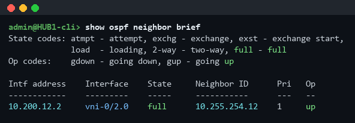
HUB1 reaches the own address of nexus-2, its anycast-RP peer, through OSPF.
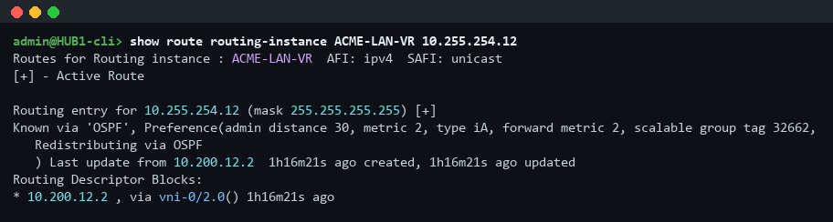
nexus-2
HUB1 (router ID 10.255.255.1, address 10.200.12.1) is FULL on Eth1/3.
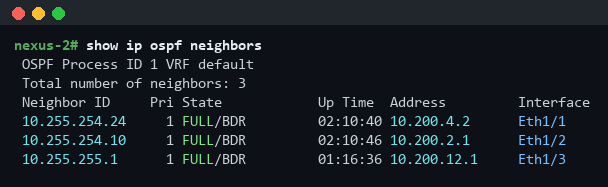
The branch LAN behind the SD-WAN overlay is learned from HUB1 (OSPF type-2, tag 2).
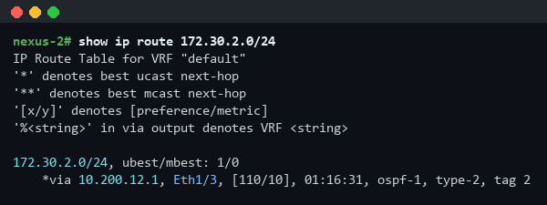
Branch1
A Cisco-side LAN is known on the branch through the overlay, next hop HUB1.
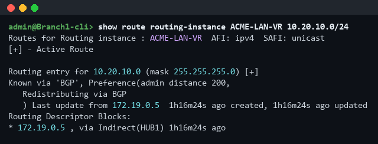
7.2 PIM neighbours and the RP
HUB1
Three PIM neighbours: nexus-2 on the LAN link and the two branches on the overlay (dtvi interfaces).
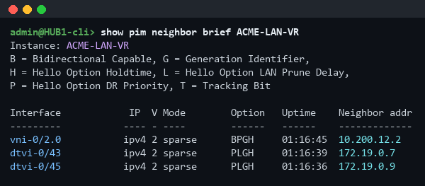
10.255.255.1 is the static RP for 224.0.0.0/4.
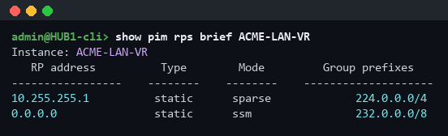
PIM runs on the LAN link, on the overlay interfaces and on tvi-0/111.0, the RP address.
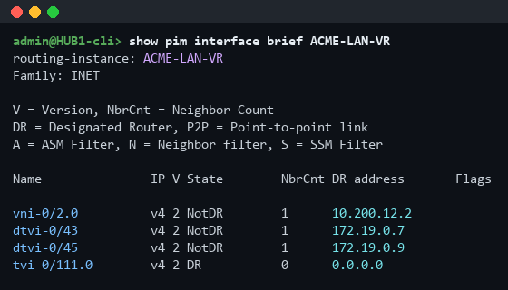
Branch1 and Branch2
Branch1: HUB1 and Branch2 are PIM neighbours over the overlay.
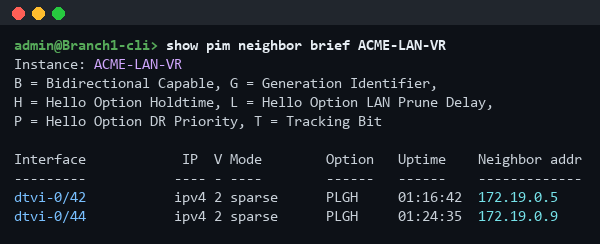
Branch1 uses the same static RP.
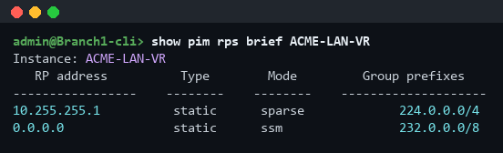
Branch1 reaches the RP address through HUB1.
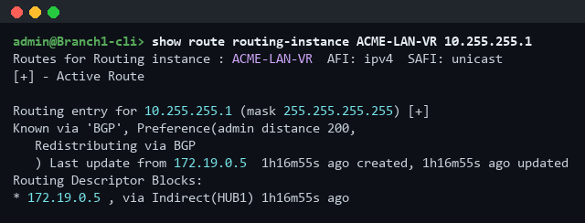
Branch2: HUB1 and Branch1 are PIM neighbours.
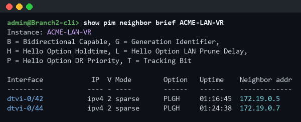
Branch2 uses the same static RP.
nexus-2 and nexus-1
HUB1 (10.200.12.1) is a PIM neighbour of nexus-2 on Ethernet1/3.
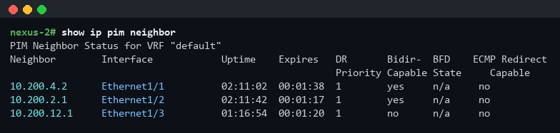
nexus-2 is RP for 10.255.255.1 (the asterisk) and lists the anycast-RP members.
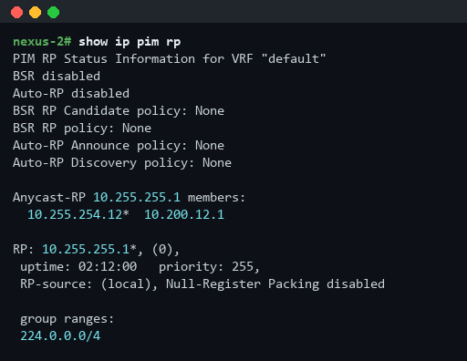
nexus-1, not an RP: its PIM neighbour is nexus-3.
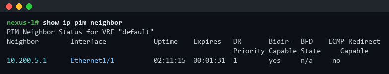
nexus-1 uses 10.255.255.1 as RP (no asterisk: the address is not its own).
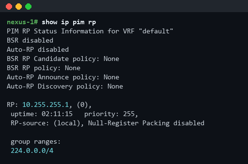
7.3 The anycast-RP set (RFC 4610) between HUB1 and nexus-2
HUB1
Two rows for the anycast RP 10.255.255.1: the own address of HUB1 with LOCAL true and the peer nexus-2 with LOCAL false. If the LOCAL true row is missing, the local address is not configured (section 3.7).
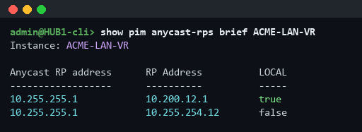
nexus-2
nexus-2 lists the same two members from its side: itself (asterisk) and HUB1 10.200.12.1.
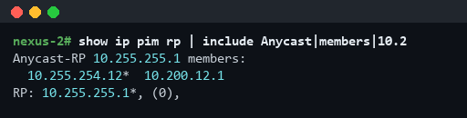
7.4 MSDP between the Cisco RPs
nexus-2: both MSDP peers are Established. The last column counts the (S,G) entries received from each peer.
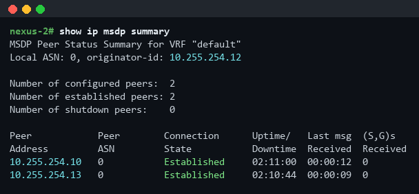
nexus-0: both peers Established.
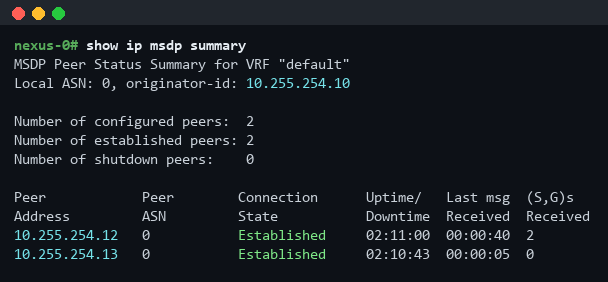
nexus-3: both peers Established.
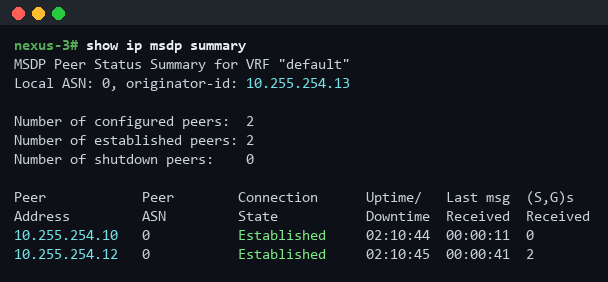
7.5 Receivers have joined (IGMP)
Branch2: both groups are joined on the LAN interface, reported by alpine-2 (172.30.3.10).
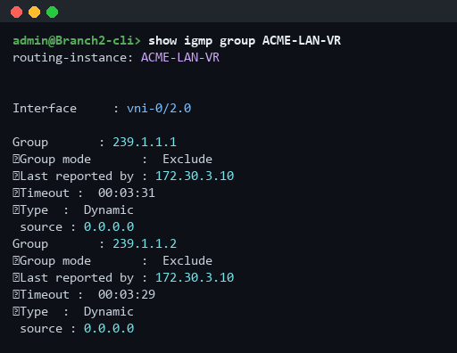
nexus-1: 239.1.1.1 is joined on Ethernet1/2, reported by alpine-1 (10.20.10.10).
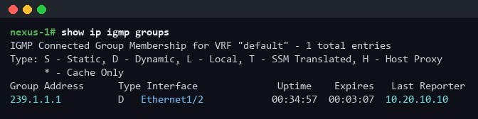
7.6 Versa source to Cisco receiver: alpine-3 > Branch1 > HUB1 > nexus-2 > MSDP > nexus-3 > nexus-1 > alpine-1
This is the direction that needs the gateway: the source registers at the Versa RP, and the receiver has joined a Cisco RP that only learns sources through MSDP.
Sender alpine-3 (172.30.2.10) transmits 1000-byte datagrams to 239.1.1.1.
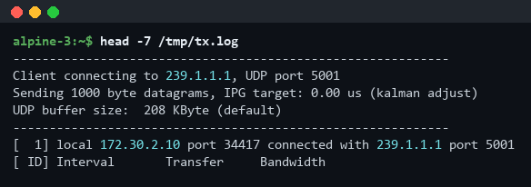
Branch1, first-hop router: the source 172.30.2.10 is known on the LAN interface vni-0/2.0.
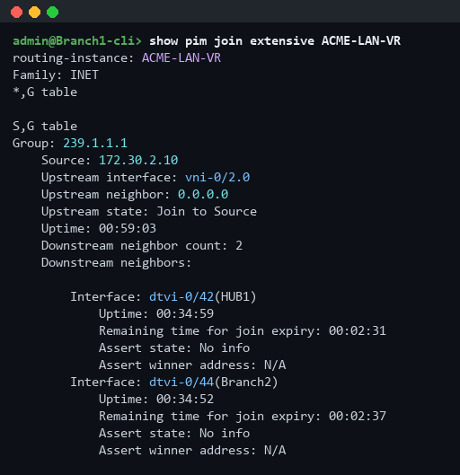
HUB1, the Versa RP: (172.30.2.10, 239.1.1.1) comes in from Branch1 over the overlay (dtvi) and goes out on vni-0/2.0 toward nexus-2. The second entry belongs to step 7.7.
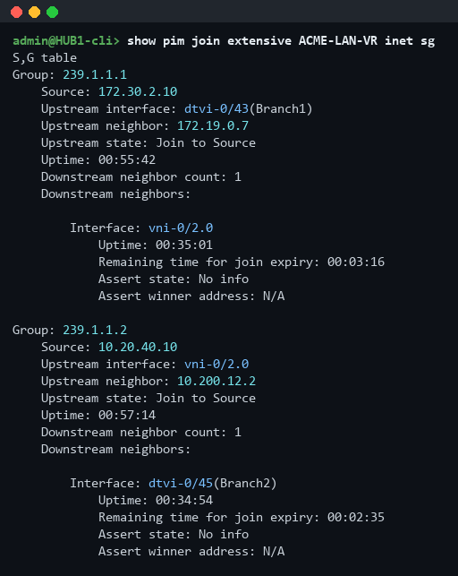
HUB1 forwards both streams; the SDWAN column shows which one leaves through the overlay.
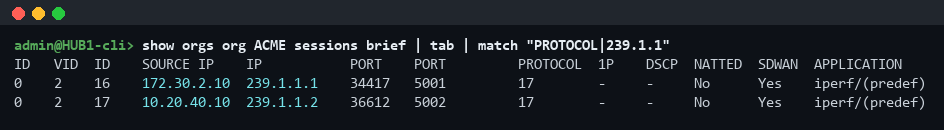
nexus-2, the gateway: the stream arrives on Ethernet1/3 from HUB1 (RPF neighbour 10.200.12.1).
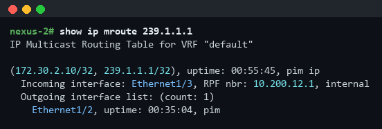
RFC 4610 half: nexus-2 receives the PIM Registers that HUB1 sends to its anycast-RP peer for this source.
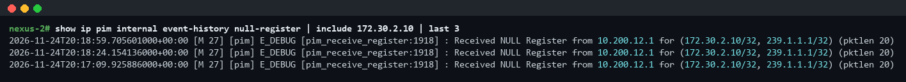
MSDP half: nexus-3 has the Versa source 172.30.2.10 in its SA cache, announced by nexus-2 (RP 10.255.254.12), In_MRIB True.
nexus-3, the RP the Cisco receiver joined: the (S,G) entry carries the msdp flag and forwards to Ethernet1/2 toward nexus-1.
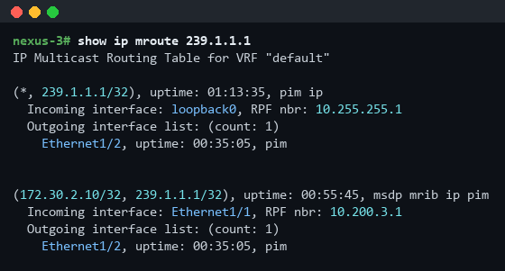
nexus-1, last-hop router: (S,G) with the receiver interface Ethernet1/2 in the outgoing list.
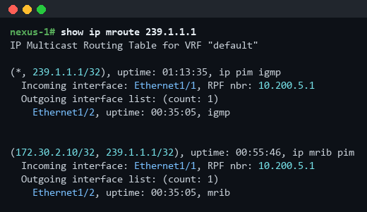
Receiver alpine-1 on the Cisco side gets the stream from 172.30.2.10: 64 kbit/s, 0 of 40 datagrams lost in every interval.
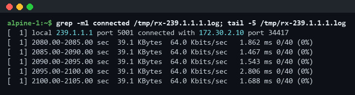
7.7 Cisco source to Versa receiver: alpine-0 > nexus-4 > nexus-2 > HUB1 > Branch2 > alpine-2
The source registers at nexus-2. nexus-2 announces it to the Cisco RPs with MSDP and copies the Register to HUB1, which is the RP of the Versa receiver.
Sender alpine-0 (10.20.40.10) transmits to 239.1.1.2.
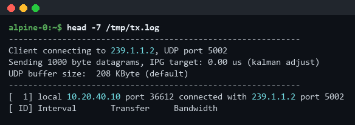
nexus-4, first-hop router of the source.
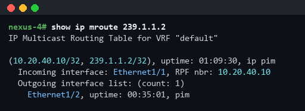
nexus-2: Ethernet1/3 (HUB1) is in the outgoing list. HUB1 joined after nexus-2 copied the Register to it.
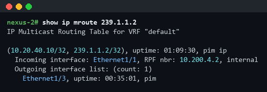
Register counters of nexus-2: Registers and Null-Registers received, Register-Stops sent and received.
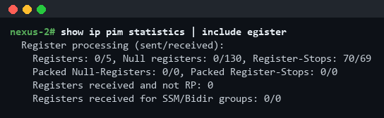
The other Cisco RPs know the same source through MSDP (and the Versa source of step 7.6).
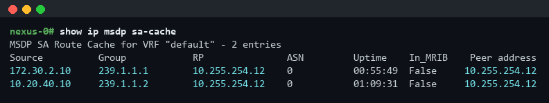
HUB1: (10.20.40.10, 239.1.1.2) comes in on vni-0/2.0 from nexus-2 (10.200.12.2) and goes out on the overlay to Branch2.
Branch2, last-hop router of the Versa receiver: the groups are joined toward HUB1 over the overlay, with the LAN interface as downstream.
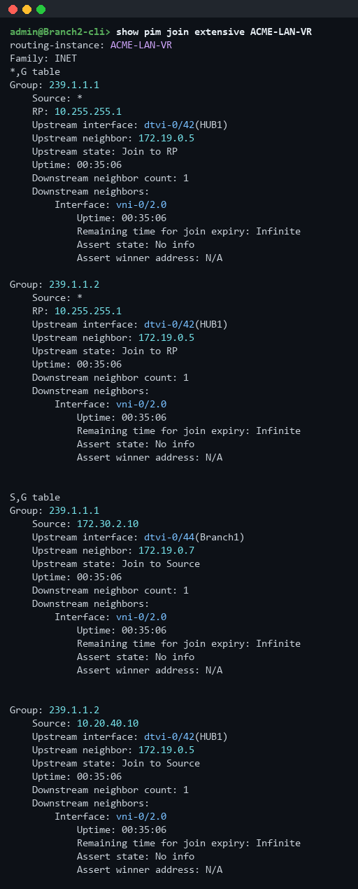
Receiver alpine-2 behind Branch2 gets the stream from 10.20.40.10: 64 kbit/s, 0 % loss.
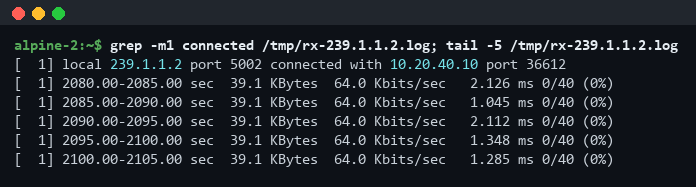
7.8 Versa source to Versa receiver: alpine-3 > Branch1 > HUB1 > Branch2 > alpine-2
Receiver alpine-2 behind Branch2 gets the stream of the Branch1 source 172.30.2.10: 64 kbit/s, 0 % loss.
8. Confirmation
| Check | Expected | Result | Status |
|---|---|---|---|
| HUB1: OSPF neighbour nexus-2 | full | full, 10.255.254.12 on vni-0/2.0 | PASS |
| HUB1: PIM neighbours | nexus-2 and both branches (3) | 3 neighbours | PASS |
| HUB1: RP | 10.255.255.1 static, 224.0.0.0/4 | 10.255.255.1 static 224.0.0.0/4 | PASS |
| HUB1: anycast-RP set | own address LOCAL true, peer LOCAL false | 10.200.12.1 true, 10.255.254.12 false | PASS |
| nexus-2: anycast-RP members | 10.255.254.12 and 10.200.12.1 | 10.255.254.12* 10.200.12.1 | PASS |
| nexus-2: MSDP peers | 2 Established | 2 established | PASS |
| nexus-0: MSDP peers | 2 Established | 2 established | PASS |
| nexus-3: MSDP peers | 2 Established | 2 established | PASS |
| nexus-2: Register from HUB1 for the Versa source | received from 10.200.12.1 | NULL Register from 10.200.12.1 | PASS |
| nexus-3: Versa source in the MSDP SA cache | 172.30.2.10 239.1.1.1, In_MRIB True | RP 10.255.254.12, In_MRIB True | PASS |
| nexus-3: (S,G) for the Versa source | msdp flag, outgoing Ethernet1/2 | msdp mrib ip pim, Ethernet1/2 | PASS |
| HUB1: (S,G) for the Cisco source | upstream nexus-2, downstream Branch2 | upstream vni-0/2.0 10.200.12.2 | PASS |
| nexus-0: Cisco source in the MSDP SA cache | 10.20.40.10 239.1.1.2 | RP 10.255.254.12 | PASS |
| alpine-1: stream from the Versa source (Cisco receiver) | 64 kbit/s, 0 % loss | 5 intervals, 0/40 (0%) | PASS |
| alpine-2: stream from the Cisco source (Versa receiver) | 64 kbit/s, 0 % loss | 5 intervals, 0/40 (0%) | PASS |
| alpine-2: stream from the Versa source (Versa receiver) | 64 kbit/s, 0 % loss | 5 intervals, 0/40 (0%) | PASS |
Scope of the validation: one Versa hub as RP, one group in each direction, 64 kbit/s, 1000-byte datagrams. Not tested: failure of an RP, a second Versa RP in the set, Cisco IOS XE or IOS XR as the MSDP RPs (the three MSDP RPs here are NX-OS), datagrams larger than 1000 bytes, scale.
9. Things to know before you repeat this
| # | What happens | Message or observation | What to do |
|---|---|---|---|
| 1 | In this lab the Director 22.1.4 GUI did not store the Anycast RP Local Address | After OK the row has no local address; the template has no local-address leaf | Write the anycast-RP entry with the Director REST API (section 3.7), then check for the LOCAL true row (section 7.3) |
| 2 | An anycast-RP entry without a local address commits without an error | HUB1 answers the peer's Registers with Register-Stop and builds no (S,G); only the peer row (LOCAL false) is shown | Same as 1 |
| 3 | Commit validation message when the local interface carries the anycast address | Anycast RP address 10.255.255.1 configured in PIM instance 1 cannot be same as one of the addresses of local-interface tvi-0/111.0 | Use the hub's own address as Local Address, never the interface of the shared RP address |
| 4 | Commit validation message when PIM is enabled on an interface that is a member of a network | Interface vni-0/2.0 is part of the network ACME-branch-lan | Enable PIM on the Networks tab with the network, not on the Interfaces tab |
| 5 | 1470-byte multicast datagrams did not pass in this lab | First-hop branch: forwarded and dropped packet counts of the session are equal; nothing arrives at the receiving branch | Send smaller datagrams (1000 bytes passed). The cause was not investigated [Inference: overlay and Register encapsulation overhead] |